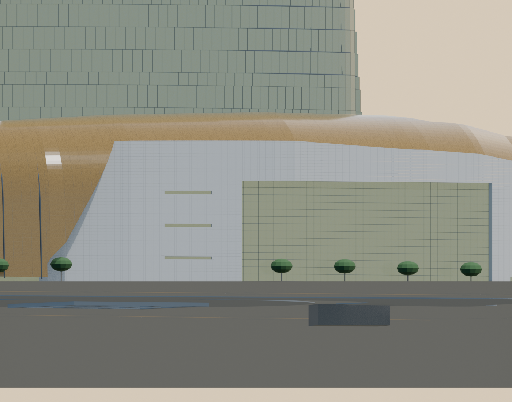
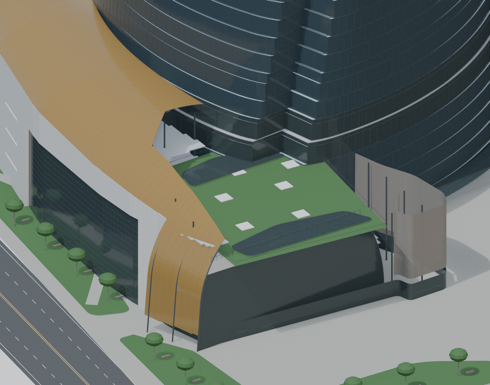
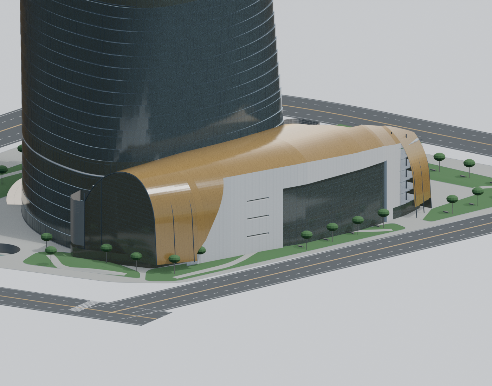
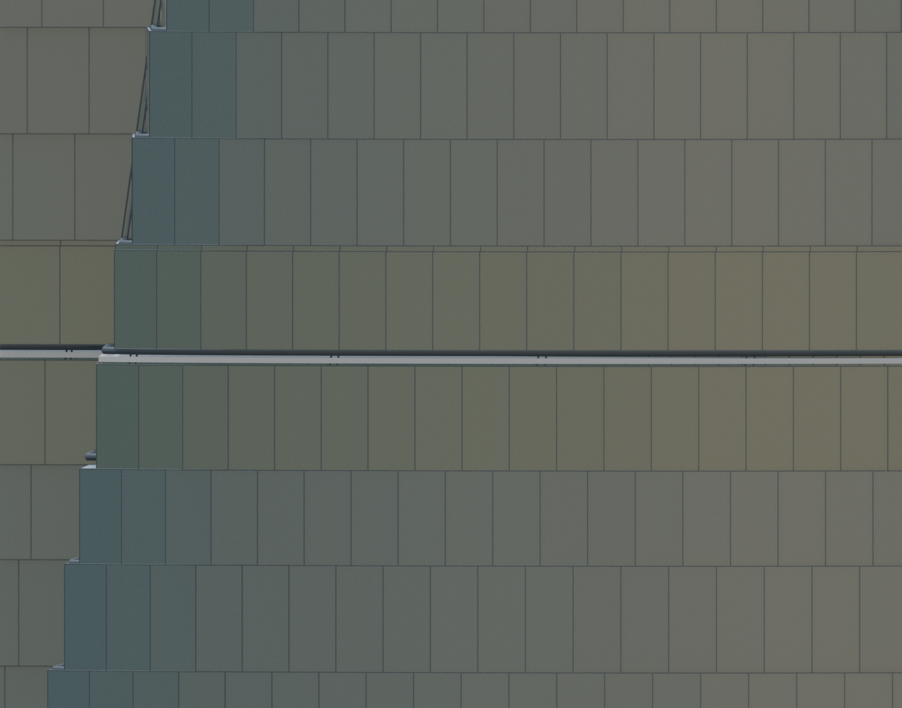

用户街景：石材斜肩、宽内嵌玻璃和侧边窄横窗。未校正透视，不能比较米制误差。


本页核对拓扑，未进行相机标定或竣工尺寸验证。原照片仅本地可见，公开仓库不重新分发。缺图时右侧模型仍可查看。
用户街景：石材斜肩、宽内嵌玻璃和侧边窄横窗。未校正透视，不能比较米制误差。

Gensler实际航拍：开放庭院在短端、另一端封闭玻璃拱口。上部坐标、平台标高候选。


用户图1疑似设计效果图：只辅助核对金壳/石材/庭院关系，以街景及实际航拍为先。


两层转换夹层中央：真实删除外A/V玻璃窄环；原父列保留。16块完整转换板恢复，旧楼板豁口数量=0。

| 环带 | 候选标高m | 上下边父面板数 | 跨越环带玻璃面数 |
|---|---|---|---|
| TRANSITION_01_A_HORIZONTAL_SLIT | [27.535, 28.135] | 138 / 138 | 0 |
| TRANSITION_02_A_HORIZONTAL_SLIT | [93.95714285714286, 94.55714285714285] | 138 / 138 | 0 |
| TRANSITION_03_A_HORIZONTAL_SLIT | [168.68749999999997, 169.2875] | 138 / 138 | 0 |
| TRANSITION_04_A_HORIZONTAL_SLIT | [234.35714285714283, 234.95714285714286] | 138 / 138 | 0 |
| TRANSITION_05_A_HORIZONTAL_SLIT | [309.0571428571429, 309.6571428571429] | 138 / 138 | 0 |
| TRANSITION_06_A_HORIZONTAL_SLIT | [388.2875, 388.88750000000005] | 138 / 138 | 0 |
| TRANSITION_07_A_HORIZONTAL_SLIT | [460.53749999999997, 461.1375] | 138 / 138 | 0 |
| TRANSITION_08_A_HORIZONTAL_SLIT | [537.1375, 537.7375] | 138 / 138 | 0 |
缺带0.60m为可修改候选；上下层号和标高尚缺完整竣工交叉表。所有软件容差只检查本模型。